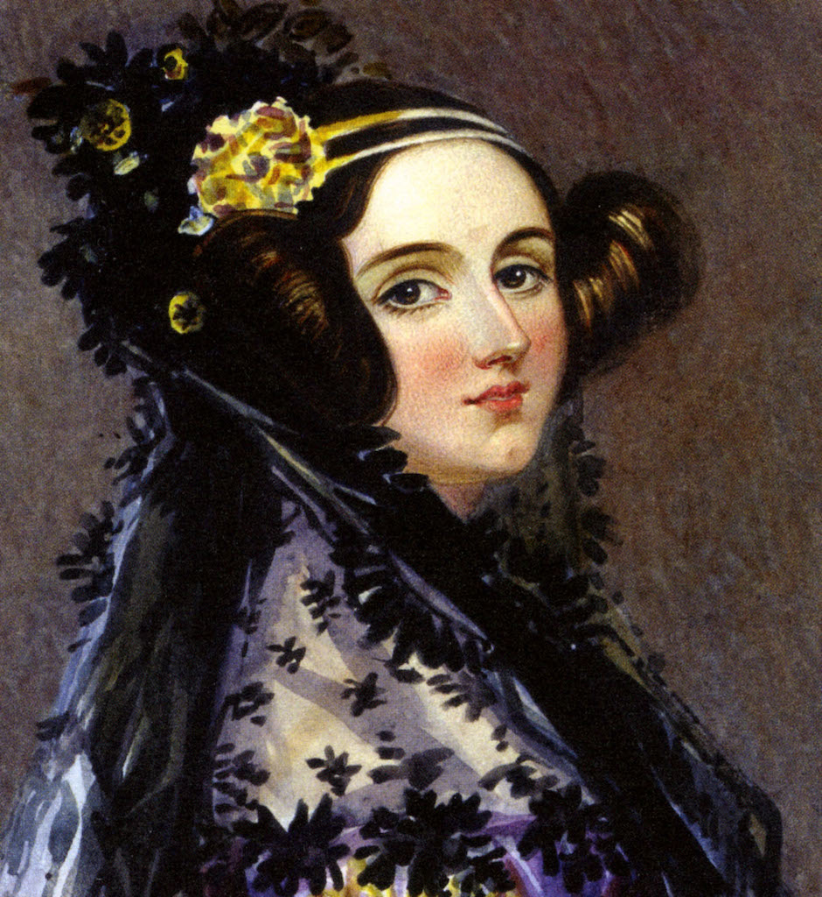

Augusta Ada King-Noel, Countess of Lovelace was an English mathematician and writer, chiefly known for her work on Charles Babbage's proposed mechanical general-purpose computer, the Analytical Engine. She was the first to recognise that the machine
had applications beyond pure calculation, and created the first algorithm intended to be carried out by such a machine. As a result, she is often regarded as the first to recognise the full potential of a "computing machine" and the first computer
programmer.

Timeline of Ada's Life
- Dec 10, 1815 - Born under the name Ada Augusta Byron , she was the only child of the poet George Gordon the 6th (Lord Byron) and his wife, Anne Isabella "Annabella" Milbanke (Baroness Wentworth).
- Jan 16, 1816 - Parents Separate
- Apr 19, 1824 - Lord Byron (Ada'a father) dies in a war in greece
- Oct 1, 1829 - Ada gets measles and is unable to leave bed. This last 3 years.
- Apr 1, 1832 - Recovers from measles. She can walk with crutches.
- Jan 1, 1833 - Ada meets Charles Babbage. He disscusses his difference engine with her. She is inspired by his words.
- Jul 8, 1835 - Ada weds William King.
- May 12, 1836 - Ada's first child, Byron, is born.
- Sep 22, 1837 - Ada's second child, Anne Isabella, is born.
- Jun 30, 1838 - Ada becomes Countess of Lovelace.
- Jul 2, 1839 - Ada's third child, Ralph Gordon, is born.
- Aug 1, 1843 - Ada's translation and Notes on the analytical engine are published. This is her life's achievement; inside is what is considered to be the world's first computer program.
- Nov 27, 1852 - Died at the age of thirty-six from uterine cancer and bloodletting by her physicians. She was buried, at her request, next to her father at the Church of St. Mary Magdalene in Hucknall, Nottingham.
Imagination is the Discovering Faculty, pre-eminently. It is that which penetrates into the unseen worlds around us, the worlds of Science.
Ada Lovelace